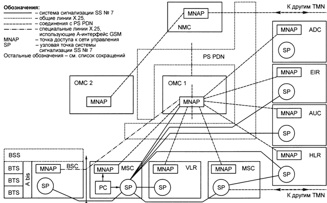
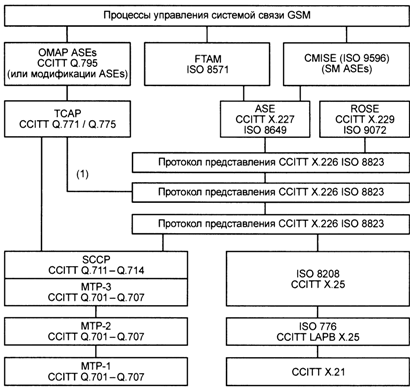
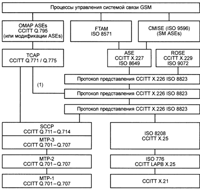

Обеспечивают взаимодействие элементов сети, операционных систем и рабочих станций через сети передачи данных или локальные сети связи. Для гарантированной совместной работы соединяемых элементов сети необходимы четкие технические требования к интерфейсу, функционально независимые от типа устройства и поставщика. Это требует совместимых протоколов связи и совместимого метода представления данных для передачи сообщений, включая совместимые описания групповых сообщений для функций сети управления.
Интерфейсы между TMN. Состав и функциональное назначение интерфейсов в GSM TMN показаны на рис.5.2.

Рис.5.2. Интерфейсы GSM TMN
Для передачи сообщений между сетями управления, используемыми, например, разными операторами применяется система сигнализации CCITT SS № 7 или Х.25. При применении SS№7 используются протоколы CCITT (Голубая книга), рекомендация Q.795 [9-12]. При использовании сетей Х.25 необходимы дополнительные соглашения между операторами по использованию протоколов более высокого уровня. Некоторые функции сетевого управления определены СЕРТ рабочей подгруппой SPS 6 в рекомендации GSM 09.02 [9-12], которая требует использования SS № 7 в следующих случаях:
передачи информации между MSC и HLR другой PLMN;
идентификации оборудования;
обмена сообщениями между регистрами положения;
при запросе на «эстафетную передачу».
Интерфейс TMN между PLMN и узлами TMN.В общем случае операторы сетей могут свободно использовать либо систему сигнализации SS № 7, предусмотренную в PLMN, либо специализированную сеть Х.25 в соответствии с рекомендациями CCITT (Голубая книга) Q.513 [9-12]. При использовании сетей Х.25 могут быть необходимы средства для преобразования протоколов обмена (Х.25 — SS № 7).
Информационный обмен в процессе сетевого управления между BSS и MSC (А-интер-фейс, рис.5.3) обеспечивается SS № 7.
 

Рис.5.3. Информационный обмен в процессе сетевого
управления между BSS и MSC
Требования к средствам файлового обмена обеспечиваются использованием SCCP класса 2 и транспортного протокола Х.224 класса 2, либо SCCP класса 3 и Х.224 класса 0. Также предусмотрена специальная версия GSM, касающаяся применения соединений Х.25 на A-интерфейсе. Интерфейс между BTS и BSC (интерфейс GSM A-bis) основан на применении LAPD протоколов для информационного обмена при сетевом управлении. Все узлы PLMN, за исключением BTS, оснащены общим интерфейсом Х.25. Это обеспечивает полный доступ к TMN на уровне 3 либо локально, либо дистанционно за счет использования отдельного подключения к PS PDN. При использовании в PLMN локальных сетей связи интерфейсы TMN определяются СЕРТ рекомендацией Т/К 02-11 [7,9]. Полная структурная схема процессов управления системой связи GSM, состав и сопряжения протоколов связи показаны на рис.5.3.
Протоколы более высоких уровней, используемые в GSM TMN. Сопряжение на более высоких уровнях (выше уровня 3) может быть предусмотрено при использовании стандартных протоколов, основанных на рекомендациях (Голубая книга) CCITT Q.795 или на стандартах ISO для общих информационных служб управления (CMIS) и доступа и управления файловым обменом (FTAM), как это иллюстрируется на рис.5.3 [9-12]. Однако на первом этапе не рекомендуется использование ОМАР в GSM TMN, так как это требует сетевого обслуживания без подключений, которое не может быть поддержано со стороны SS № 7 и Х.25. Кроме того, способы файлового обмена, которые являются обязательными для эффективного управления PLMN, полностью не определены в ОМАР.